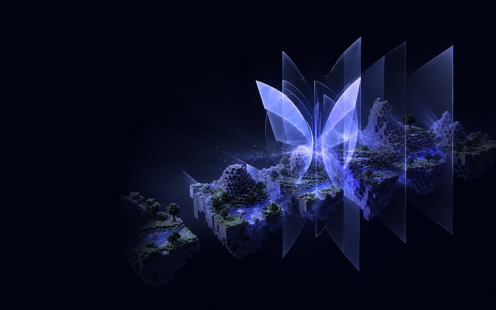

Transfers disappear into play
Players move between backend servers without a visible disconnect or a conventional proxy handoff interrupting the moment.
Mirage / Seamless server meshing
Mirage connects multiple Minecraft servers behind one continuous player experience—without the visible disconnect, loading screen, or traditional server switch.

Your infrastructure can remain distributed. To the player, movement stays direct, familiar, and continuous.
Players move between backend servers without a visible disconnect or a conventional proxy handoff interrupting the moment.
Add room for new areas, systems, and players while the network continues to feel like one place.
Keep infrastructure decisions behind the scenes so players stay focused on where they are going—not which server is carrying them.
Mirage is designed for networks that have outgrown a single-server boundary but refuse to make scale feel like friction.
The program gives network operators a practical route from evaluating Mirage to running it with long-term support.
Start with your network, your goals, and a clear conversation about where Mirage creates value.
Plan the path into Mirage with hands-on deployment guidance instead of a generic handoff.
Keep the service moving with ongoing access to the people who understand the technology.
Explore licensed builds, partner hosting offers, documentation, and infrastructure tooling where the network requires them.
We learn how your network is structured, what you are building, and where players encounter limits today.
Together, we define the right route into Mirage and the support your rollout needs.
Deploy with guidance, then continue with updates and direct support as your world grows.
The Caligo butterfly changes how it is perceived through the patterns on its wings. Mirage follows the same principle: the infrastructure remains physically separated, while the separation disappears from the player’s view.
Share an email and, if useful, a little context. A Project Caligo team member will review it and reply directly.